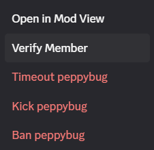

The mysterious Verify Member button. I just appeared one day without any explanation and you've probably seen it before and may have been wondering what it does.
Verifying a member waives the server verification level for that user and allows them to interact on the server.
- LOW: Must have a verified email on their Discord account
- MEDIUM: Must also be registered on Discord for longer than 5 minutes.
- HIGH: Must also be a member of the server for longer than 10 minutes.
- HIGHEST: Must have a verified phone on their Discord account.
Unverified a member re-applies these requirements, if they have taken no steps since (i.e. added a phone number when your server is on HIGHEST), they will lose the abilty to interact on the server until they do so or you re-verify them.
Good to know:
- Users with a phone number on their account skip the 10 minutes waiting time upon joining when your level is set to HIGH or HIGHEST.
- If a user is assigned a role while onboarding is disabled, the server verification level is waived for them (equivalent to verifying them). If onboarding was ever enabled before (even if later disabled), the server verification level will continue to be required (assigning a role will no longer bypass it)
